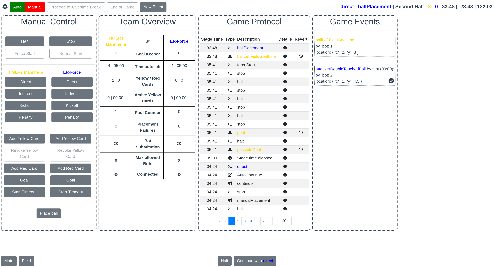

FAQ
This page will contain information on topics outside the stack itself, like how to debug code, learn C++, or write good ROS code.
How do I debug my code?
In Python, the best way is to set up print() statements and print out relevant variables. Python is an interpreted language, meaning there’s no easy way for us to step through it with a debugger.
In C++, you can achieve a similar debug-by-print with SPDLOG.
Add
#include <spdlog/spdlog.h>in your header file.Add some lines like
SPDLOG_INFO("VARIABLE_NAME = {}", variable_name);
There are examples of SPDLOG used in our codebase for error messages. Grep for
SPDLOG and you’ll find some (if you don’t know how, see our Tutorial).
If that fails, in C++, we also have the option of compiling in debug mode, and then setting up a debugger. This is actually quite simple!
In particular, we have had success using LLDB, made by the same group that develops the clang compiler.
As of winter 2022, the ubuntu-setup script installs clang-10 using a script which also includes lldb-10 (so you should not need to install anything new for this).
First, go to launch/soccer.launch.py and comment out the Node that is
throwing errors. Then, in another terminal tab, run ros2 run --prefix
'lldb-10 run' rj_robocup <executable_name>. Type r in the LLDB command-line
utility that pops up to run, or any other valid LLDB option (Google it).
(If that doesn’t work for some reason, another way is to run the executable
without the prefix (ros2 run rj_robocup executable_name). Then attach to
this executable by running sudo lldb-10 -n name_of_particular_proc. This
method is not as good as the previously described one, but I included it for
completeness. -Kasra)
How do you find this particular name?
It depends on what file/node you wish to debug.
As of the time of writing (spring 2023), we do not use any ros2 node
composition, so each node is its own process. Looking in soccer.launch.py,
a node’s <executable_name> corresponds to the process name to place after
-n.
Another method to find the process names of nodes is to run top (or
htop) in a new terminal tab and look in there.
How do you use lldb?
Google what you want to do and follow the top result or follow the lldb tutorial on their website.
CS2110 and CS2200 will introduce you to gdb, which is another debugger for C/C++; if you already know that, the commands are basically the same (the syntax is different in many places though).
C++ is hard. Where can I get better at it?
One of the authors of these docs recommends LearnCpp. It is very thorough, and assumes no prior experience. This particular author went through ~80% of the site in a week to prepare for a C++ interview with a self-driving car company. This is not the recommended approach, but it worked: he got the job!
Why do we use ROS?
Political answer: because all the other RJ teams agreed to around 2020, so we rewrote a large portion of our codebase to follow suit. (This is why old screenshots show our UI with more functionality than new ones.)
Technical answer: to allow for easy multithreading.
ROS is designed to be a catalog of robotics tools that are easy to plug-and-play, hence the strict typing for msgs and large number of external packages. However, RoboCup SSL is such a weird robotics application that a lot of the most popular ROS tools don’t help us.
For instance, there is a whole ROS2 package to handle localization and sensor fusion, which is a challenging problem that someone has solved for you! However, we simply have no need to localize thanks to our competition’s overhead camera. There’s a ROS2 application to allow for 3D modeling and simulation called Gazebo! However, we have ER-force for physics simulation and our UI for visualization (or SSL Game Controller if that fails).
So we primarily use ROS as a way to create a multithreaded application, with a built-in messaging framework and introspection tools, rather than as a library of useful robotics software to build upon.
Is it overkill? Probably. But hopefully it will teach you a valuable industry tool along the way.
How do I learn more about ROS?
Generally, our tutorial should guide you through all ROS knowledge you’ll need to be successful in RoboCup. If you need more advanced ROS, the official documentation contains plenty of tutorials to help you out!
How should I use ROS msgs in my code?
In a large codebase such as this one, it is best to leave all interfacing with ROS .msg types strictly to ROS nodes. This is because the autogenerated structs for ROS msgs are limited in functionality, so passing around raw msgs in custom classes may lead to limited or unexpected behavior.
In general, follow these guidelines:
Leave ROS msg interfacing strictly to ROS nodes.
When adding a new ROS msg type, create a C++ struct/class to represent that msg type in C++ classes outside of ROS nodes. This will allow you to add functionality that the ROS msg may not have. An example of this is
Trajectory.msg/trajectory.hpp.At the bottom of your custom C++ struct/class, add a template method under
namespace rj_convertin order to convert to/from ROS easily. (Again, seetrajectory.hpp.) This will generate two methods:rj_convert::convert_to_ros()andrj_convert::convert_from_ros()for ease of conversion.
What is a .launch file?
A .launch file is how ROS knows what nodes to launch and where to look for them.
Our launch files are pretty similar to the ones introduced in ROS wiki tutorials, but we also use flags on launch to easily switch between certain nodes (for example we can switch between sim radio and network radio by setting a particular to the proper boolean value). Alias for common launch configurations can be found in the makefile.
What is a build system?
A build system is an easy way to ensure many source code files end up as one program. In C/C++, a build system will compile all the files you ask it to, then link those files together and spit out a single executable.
We use cmake and ninja. We prefer using clang as the C++ compiler compared to
gcc, but either will work. If you’ve gone through the tutorial, you’ve already
been using our build system with commands like make perf and make
again!
Most of the details on the high-level construction of our build system can
been ascertained by reading the root CMakeLists.txt.
If you are adding a new C++ file, it is best to just follow the existing
format by reading through CMakeLists.txt in the relevant directories.
(CMake is notoriously hard to learn.)
What is continuous integration?
Continuous integration (CI) is how we ensure code merged into our main branch isn’t hopelessly broken. Currently, we run basic unit tests, a test to ensure our code builds (known as a “smoke test”), and a style checker. Our CI also generates warnings and annotates PR code with them.
To do this, we use Github Actions. The configuration for that can be found in
.github/workflows.
How do I run the external referee?
First, read the Referee section of the Our Stack page and this section of the rulebook. This will give you some background on what the SSL Game Controller does. This program is given by the league and helps simulate what it will be like at competition, where the (human) referee sits at a different computer to the one that runs our software and gives game commands from there.
Installation is simple. First, create an empty directory named
ssl-game-controller at the same level as your clone of
robocup-software:
~/coding/robocup/
├── robocup-software/
├── ssl-game-controller/
Then, download the latest release binary in the SSL GC repo and put it into that
folder. Finally, make the release binary executable by cd ing to the
ssl-game-controller repo and running chmod +x <name of release binary>.
When you want to launch the game controller, cd to your
ssl-game-controller directory and run the release binary with ./<name of
release binary>. (You can tab-complete this by typing ./ and then hitting
tab.) The binary will output a message saying it has launched the UI at a
specific URL–click that link to open the UI.
Using external referee in an M1 Mac (ARM64 architecture)
The SSL game controller repo only provides the AMD64 release, which will not work with ARM64 architectures. We will need to compile the ssl-game-controller from the source ourselves.
Clone the SSL-game-controller repo the same way as above.
Then, install the latest ARM64 version Go (this is because the ssl-game-controller uses Go). Instructions and install file can be found in Go’s official website.
Then, install the latest ARM64 version of npm. This can be done via sudo apt install npm and then use npm to upgrade npm itself by running sudo npm install npm -g
In the ssl-game-controller repo, run ./install.sh
Launch the game controller by running ~/go/bin/ssl-game-controller

Operation instructions can be found in the FAQ of the SSL GC repo.
How do I add to these docs?
See “Meta Docs” for information on adding to documentation.